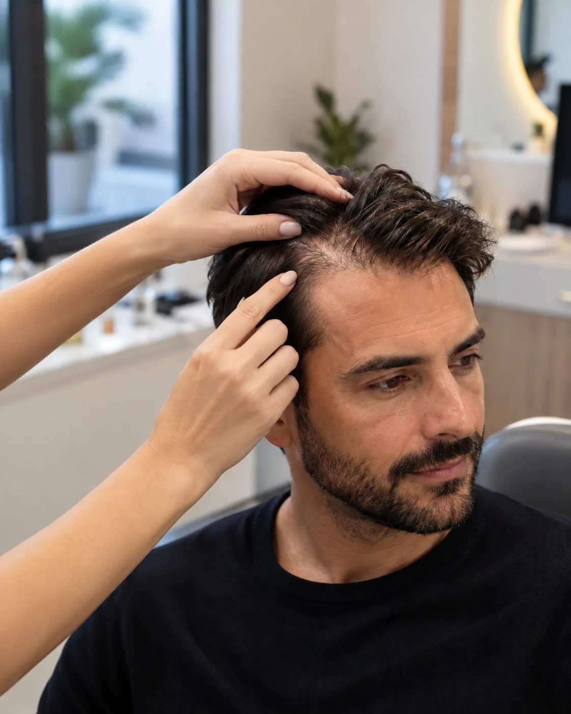

Depois
Antes
A Dra. Rafaela Sandrin realiza transplantes FUE com ou sem raspagem (técnica NoShave) para reconstruir entradas, falhas e perda de densidade.
Quero agendar minha consultaO vídeo está em produção e entra aqui em breve.
Arraste e veja o antes e depois
A Dra. Rafaela avalia em consulta particular a evolução da calvície, histórico, características dos fios e suas principais queixas.
São realizados os exames necessários para compreender melhor a saúde e auxiliar no planejamento do tratamento.
Com todas as informações do caso, a Dra. Rafaela define a estratégia mais adequada.
É o dia de colocar o planejamento em prática. A Dra. Rafaela e todo o corpo clínico realizam o transplante capilar com foco no resultado ideal.
Acompanhamento de todo o processo de cicatrização com os cuidados ideais até chegar no resultado ideal, garantindo que a calvície não retorne.
Os fios começam a crescer nos meses seguintes ao transplante capilar, com resultados cada vez mais visíveis ao longo do primeiro ano.
Do planejamento à execução do transplante capilar, a Dra. Rafaela acompanha cada etapa do procedimento, com atenção às características e necessidades de cada paciente.
O procedimento é realizado em um centro cirúrgico estruturado para transplante capilar. O processo envolve: exames pré-operatórios, avaliação de risco cirúrgico, consulta pré-anestésica e equipe.
Um tempo inteiramente dedicado para entender o seu caso, com uma análise próxima e detalhada das características dos seus fios, da área doadora e dos seus objetivos.
Para pacientes com indicação, a técnica de transplante No-Shave permite realizar o procedimento sem raspar completamente o cabelo, facilitando uma recuperação mais discreta. É possível recuperar a densidade dos fios com um planejamento personalizado e preservar o comprimento do cabelo em casos selecionados.
Quero saber se a técnica no-shave é para mim
Referência em Transplante Capilar NoShave (sem raspar) e Transplante Capilar FUE em Cuiabá e região
Com mais de 5 anos de atuação, a Dra. Rafaela Sandrin reúne experiência consolidada no procedimento e no cuidado individualizado de cada paciente, possui uma trajetória construída dentro da cirurgia, com formação em Cirurgia Geral, experiências internacionais e especialização em transplante capilar.
Sua abordagem une diagnóstico, planejamento e execução cirúrgica, considerando fatores como evolução da calvície, características dos fios e preservação da área doadora.
Além do transplante capilar, atua no tratamento da calvície e na saúde capilar por meio de terapias clínicas, oferecendo acompanhamento em tricologia de acordo com as necessidades de cada paciente.
O transplante capilar é um procedimento cirúrgico que exige planejamento individualizado. Na consulta, a Dra. Rafaela Sandrin avalia o couro cabeludo e a área doadora e define a conduta mais indicada para o seu caso.
Como a queda de cabelo costuma ser progressiva, o planejamento considera não só o transplante, mas também o cuidado com os fios que você ainda tem.
Atendimento exclusivamente particular. Não atendemos convênios e não realizamos avaliações gratuitas.
Leva cerca de 1 minuto. Responda às perguntas e inicie seu agendamento.
Os transplantes capilares são realizados no Hospital Santa Helena, em Cuiabá, dentro de estrutura hospitalar preparada para o procedimento. A cirurgia conta com planejamento médico, equipe de apoio e protocolos de segurança para todas as etapas do processo.
Não. A indicação depende de fatores como o grau da calvície, a disponibilidade da área doadora e as expectativas do paciente. A avaliação médica é essencial para determinar as possibilidades de tratamento.
Nem sempre. Em casos selecionados, a técnica No-Shave permite realizar o transplante sem raspar completamente o cabelo. A indicação depende das características de cada paciente.
Os fios utilizados no transplante são retirados da área doadora e redistribuídos para as regiões com perda de cabelo. Porém, os fios naturais que permanecem no couro cabeludo continuam sofrendo influência da calvície e podem precisar de acompanhamento e tratamento para preservar o resultado ao longo dos anos.
A duração da cirurgia depende da quantidade de folículos que serão transplantados e da complexidade de cada caso. Durante o planejamento, a Dra. Rafaela define a estratégia do procedimento considerando a área que será reconstruída e a quantidade de fios necessária.